AI (การตรวจจับวัตถุด้วย DPU IP ของ Xilinx)
1. AI (การตรวจจับวัตถุด้วย DPU IP ของ Xilinx)
สิ่งที่ระบุในบทนี้จะดำเนินการในสภาพแวดล้อมต่อไปนี้
ฮาร์ดแวร์: Windows OS上でVivado 2020.1
ซอฟต์แวร์: Ubuntu 18.04上（VMware 17.5.2）でPetalinux 2019.2
แอปพลิเคชัน: การตรวจจับวัตถุด้วย YOLOでPynq-Z2で動かす
https://xilinx.github.io/Vitis-AI/3.0/html/docs/reference/release_documentation.html
1.1. DPU ของ Xilinx (ฮาร์ดแวร์)
1.1.1. การรับ DPU IP ของ Xilinx
DPU IP เวอร์ชันล่าสุดไม่รองรับ Zynq-7000 อีกต่อไป แต่ยังรองรับจนถึงเวอร์ชัน 3.3 ในครั้งนี้เราจะใช้เวอร์ชัน 3.0 เพื่อติดตั้งบน Zynq-7000 DPU IP ที่รองรับ Zynq-7000 นั้นไม่ค่อยมีการเปิดเผยต่อสาธารณะ แต่มีอยู่ในไฟล์ zcu102-dpu-trd-2019-1-190809.zip
หลังจากแตกไฟล์ zcu102-dpu-trd-2019-1-190809.zip จะมีโฟลเดอร์ชื่อ dpu_ip อยู่ใน zcu102-dpu-trd-2019-1-timer\pl\srcs ให้คัดลอกทั้งโฟลเดอร์ dpu_ip ไปไว้ที่ตำแหน่งที่ต้องการ ในครั้งนี้จะวางไว้ที่ D:\xilinx\pynq_z2\AI\DPU\ip_repo
(โปรเจกต์ Vivado คือ D:\xilinx\pynq_z2\AI\DPU\Pynq-Z2_2020_1\pynqz2_dpu.xpr）
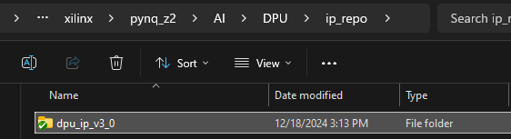
1.1.2. การเพิ่ม DPU IP ไปยัง IP Catalog
ใน IP Catalog คลิกที่ Add Repository และเพิ่ม dpu_ip
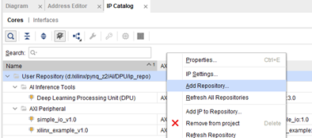
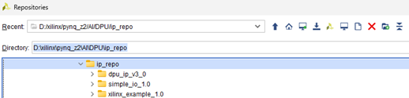
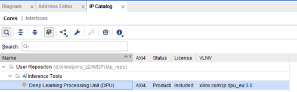
1.1.3. การติดตั้ง DPU IP
‐ เปิด Block design แล้วใส่ DPU IP จากนั้นเชื่อมต่อกับ Zynq ดังภาพด้านล่าง
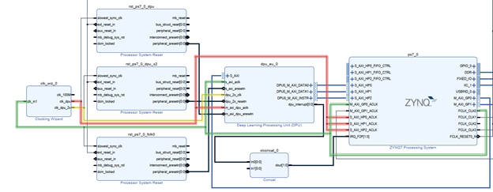
อินเทอร์เฟซของ DPU มีพอร์ตอยู่หลายพอร์ต
1．S_AXI、s_axi_aclk
ใช้สำหรับการตั้งค่าการทำงานของ DPU และอื่นๆ โดยจะเชื่อมต่อกับ AXI Master (M_AXI_GP) ของ Zynq
2．M_AXI_DATA0、M_AXI_DATA1、M_AXI_INSTR、m_axi_dpu_aclk
ใช้สำหรับส่งออกผลลัพธ์การคำนวณของ DPU โดยจะเชื่อมต่อกับ AXI Slave (S_AXI_HP0～2) ของ Zynq
3．dpu_2x_clk
จะรับสัญญาณนาฬิกา (clock) ที่มีความถี่เป็นสองเท่าของ m_axi_dpu_aclk
4．dup_interrupt
คือสัญญาณขัดจังหวะ (interrupt) ของ DPU
※ สัญญาณนาฬิกาที่ป้อนเข้า DPU IP มี 3 สัญญาณ
s_axi_aclk：Zynq→DPUの通信用、100MHzで設定します。
m_axi_dpu_aclk：DPUの演算用とDPU→Zynqの通信用、150MHzで設定します。
dpu_2x_clk：DPUの演算用、300MHzで設定します。
สัญญาณ 150MHz และ 300MHz จะถูกสร้างขึ้นโดย PLL และป้อนเข้าสู่ m_axi_dpu_aclk และ dpu_2x_clk
‐ บอร์ด pynq-z2 มีจำนวนลอจิกใน FPGA น้อย เพื่อลดการใช้ลอจิกของ DPU ให้เปลี่ยน Arch of DPU ของ DPU เป็น B1152
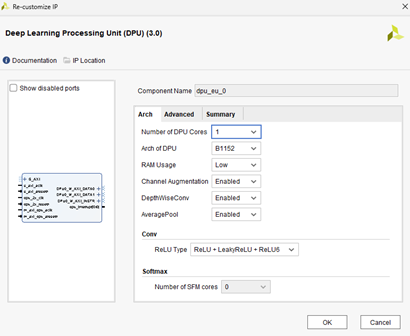
1.1.4. การสร้างข้อมูลฮาร์ดแวร์ (.XSA)
หลังจากคอมไพล์โปรเจกต์ใน Vivado เสร็จแล้ว ให้ส่งออกข้อมูลฮาร์ดแวร์ (.xsa) โดยไปที่ File → Export → Export Hardware
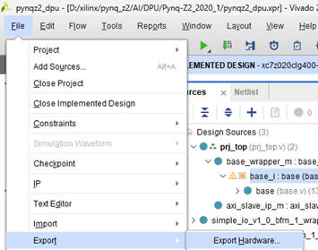
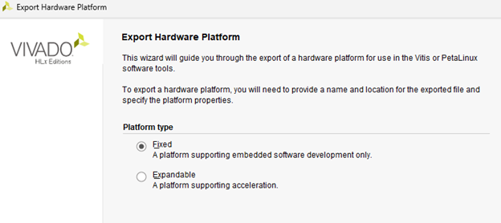

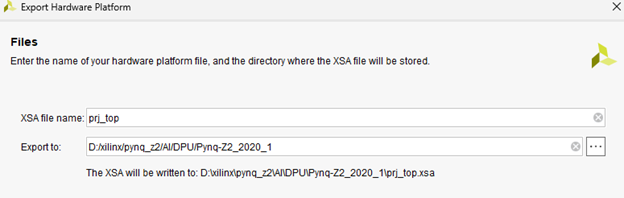
1.2. DPU ของ Xilinx (ซอฟต์แวร์)
1.2.1. การเตรียมสภาพแวดล้อม
‐ ติดตั้ง Petalinux 2019.2 บนเครื่อง Linux (Ubuntu) ในครั้งนี้จะใช้ Ubuntu 18.04
$ sudo apt update
$ sudo apt upgrade
$ sudo apt install htop vim openssh-server iproute2 gcc g++ net-tools libncurses5-dev zlib1g:i386 libssl-dev flex bison libselinux1 xterm autoconf libtool texinfo zlib1g-dev gcc-multilib build-essential screen pax gawk python3 python3-pexpect python3-pip python3-git python3-jinja2 xz-utils debianutils iputils-ping libegl1-mesa libsdl1.2-dev pylint3 cpio chrpath socat python
$ pip3 install --upgrade pip
$ sudo apt-get install tftp
$ sudo apt-get install tftpd-hpa
$ sudo apt-get install gparted
‐ ติดตั้งแพ็คเกจที่จำเป็น
# petalinux install
$ mkdir ~/petalinux_2019
$ mv ~/Downloads/petalinux-v2019.2-final-installer.run ~/petalinux_2019/.
$ cd ~/petalinux_2019
$ chmod +x petalinux-v2019.2-final-installer.run
$ ./petalinux-v2019.2-final-installer.run
([q] to close message)
‐ ใน Ubuntu ให้เปลี่ยนเชลล์เริ่มต้นของระบบ โดยเปลี่ยนเชลล์ที่ใช้รันสคริปต์จาก dash เป็น bash
$ chsh -s /bin/bash
then reboot
$ sudo dpkg-reconfigure dash
-> select no
1.2.2. การบิวด์ Linux
‐ เตรียม Petalinux
$ source ~/petalinux_2019/settings.sh
‐ สร้างโปรเจกต์ Petalinux โดยรวมข้อมูลฮาร์ดแวร์เข้าไปด้วย
$ cd ~/
$ petalinux-create --type project --template zynq --name pynqz2_dpu
$ cd pynqz2_dpu/
$ petalinux-config --get-hw-description=~/Desktop/Pynq-Z2_2020_1
จากนั้น ทำการตั้งค่าต่อไปนี้
1.
DTG Settings->Kernel Bootargs->disable generate boot args automatically
On "user set kernel bootargs", paste the following:
console=ttyPS0,115200 root=/dev/mmcblk0p2 rw earlyprintk quiet rootfstype=ext4 rootwait cma=256M
2.
Image Packaging Configuration --> Root filesystem type (SD card) --> EXT4 (SD/eMMC/SATA/USB) -> enable
‐ เพิ่มการตั้งค่าที่จำเป็นเกี่ยวกับ DPU
$ cp -rp ~/Downloads/zcu102-dpu-trd-2019-1-190809/zcu102-dpu-trd-2019-1-timer/apu/dpu_petalinux_bsp/xilinx-dpu-trd-zcu102-v2019.1/zcu102-dpu-trd-2019-1/project-spec/meta-user/recipes-modules project-spec/meta-user
$ gedit project-spec/meta-user/conf/user-rootfsconfig
CONFIG_dpu
$ gedit project-spec/meta-user/conf/petalinuxbsp.conf
IMAGE_INSTALL_append = "dpu"
$ gedit project-spec/meta-user/recipes-bsp/device-tree/files/system-user.dtsi
/include/ "system-conf.dtsi"
&amba {
xlnk {
compatible = "xlnx,xlnk-1.0";
};
};
&amba{
dpu{
#address-cells = <1>;
#size-cells = <1>;
compatible = "xilinx,dpu";
base-addr = <0x4f000000>; //CHANGE THIS ACCORDING TO YOUR DESIGN
dpucore {
compatible = "xilinx,dpucore";
interrupt-parent = <&intc>;
interrupts = <0 29 4>; //CHANGE THIS ACCORDING TO YOUR DESIGN
core-num = <0x1>; //CHANGE THIS ACCORDING TO YOUR DESIGN
};
};
};
//usb device tree
/{
usb_phy0: usb_phy@0 {
compatible = "ulpi-phy";
#phy-cells = <0>;
reg = <0xe0002000 0x1000>;
view-port = <0x0170>;
drv-vbus;
};
};
&usb0 {
dr_mode = "host";
usb-phy = <&usb_phy0>;
};
※ interrupts = <0 29 4>; คือ IRQF2P หมายเลข 61 (61-32 = 29) จำเป็นต้องตั้งค่าให้ตรงกับช่องสัญญาณ IRQ ที่ใช้ตอนออกแบบฮาร์ดแวร์ DPU
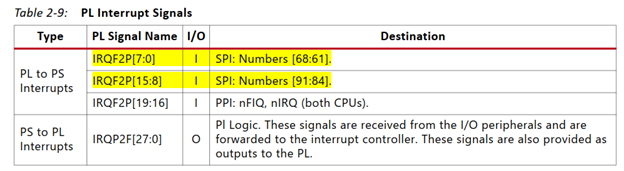
$ petalinux-config -c rootfs
modules -> dpu
Filesystem Packages -> admin -> sudo, sudo-dev
Filesystem Packages -> misc -> packagegroup-petalinux-self-hosted
Petalinux Package Groups → packagegroup-petalinux-python-modules, -dev
Petalinux Package Groups → packagegroup-petalinux-x11, -dev
Filesystem Packages -> console -> utils -> pkgconfig -> pkgconfig, pkgconfig dev
Filesystem Packages -> libs -> gtk+3 -> gtk+3, gtk+3-demo, gtk+3-dev, gtk+3-dbg
Petalinux Package Groups -> petalinuxgroup-petalinux-opencv -> opencv, opencv-dev
$ petalinux-config -c kernel
Device Drivers -> USB support -> [*]USB announce new devices
$ petalinux-build -c kernel -x finish
(To finish kernel configuration)
$ gedit project-spec/meta-user/recipes-kernel/linux/linux-xlnx/devtool-fragment.cfg
※ จากนั้นลบข้อความเดิมและวางข้อความนี้ลงไป:
CONFIG_USB_OTG=y
# CONFIG_USB_OTG_FSM is not set
# CONFIG_USB_ZERO_HNPTEST is not set
CONFIG_MEDIA_USB_SUPPORT=y
CONFIG_USB_VIDEO_CLASS=y
CONFIG_USB_VIDEO_CLASS_INPUT_EVDEV=y
CONFIG_USB_GSPCA=m
CONFIG_V4L_PLATFORM_DRIVERS=y
CONFIG_VIDEO_ADV7604=y
CONFIG_USB_HID=y
CONFIG_USB_OHCI_LITTLE_ENDIAN=y
CONFIG_USB_SUPPORT=y
CONFIG_USB_COMMON=y
CONFIG_USB_ARCH_HAS_HCD=y
CONFIG_USB=y
CONFIG_USB_ANNOUNCE_NEW_DEVICES=y
CONFIG_USB_DEFAULT_PERSIST=y
CONFIG_USB_EHCI_HCD=y
CONFIG_USB_EHCI_ROOT_HUB_TT=y
CONFIG_USB_EHCI_PCI=y
CONFIG_USB_EHCI_HCD_PLATFORM=y
CONFIG_USB_ACM=m
CONFIG_USB_PRINTER=m
CONFIG_USB_WDM=m
CONFIG_USB_TMC=m
CONFIG_USB_STORAGE=y
CONFIG_USB_CHIPIDEA=y
CONFIG_USB_CHIPIDEA_OF=y
CONFIG_USB_CHIPIDEA_PCI=y
CONFIG_USB_CHIPIDEA_HOST=y
CONFIG_USB_PHY=y
CONFIG_NOP_USB_XCEIV=y
CONFIG_AM335X_CONTROL_USB=y
CONFIG_AM335X_PHY_USB=y
CONFIG_USB_GPIO_VBUS=y
CONFIG_USB_ULPI=y
CONFIG_USB_ULPI_VIEWPORT=y
‐ บิวด์ Petalinux
$ petalinux-build
$ petalinux-package --boot --force --fsbl images/linux/zynq_fsbl.elf --fpga images/linux/*.bit --u-boot
$ petalinux-package --bsp -p ./ -o pynq-z2-dpu.bsp
ไฟล์ที่ได้จากการบิวด์จะถูกสร้างไว้ที่
./images/linux/BOOT.BIN
./images/linux/image.ub
./images/linux/rootfs.tar.gz
※ หาก BOOT.BIN ไม่ได้รวม bitstream เข้าไปด้วย ให้สร้าง BOOT.BIN อีกครั้งด้วยวิธีต่อไปนี้
รัน petalinux-config แล้วไปที่ FPGA Manager -> FPGA Manager ตั้งค่าเป็น Disable จากนั้นบิวด์ Petalinux อีกครั้ง แล้วรัน petalinux-package --boot --force --fsbl images/linux/zynq_fsbl.elf --fpga images/linux/*.bit --u-boot (อาจมีข้อผิดพลาดเกิดขึ้นระหว่างการบิวด์ แต่สามารถข้ามไปได้)
สถานะที่ BOOT.BIN ยังไม่ได้รวม bitstream
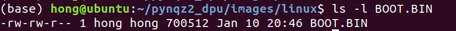
สถานะที่ BOOT.BIN รวม bitstream แล้ว (ขนาดจะประมาณ system.bit + u-boot.bin)
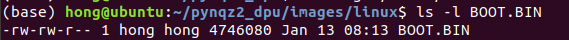
1.2.3. การสร้าง YOLO เพื่อรันบน DPU ของ Xilinx
‐ เตรียมสภาพแวดล้อม
ติดตั้ง Anaconda
$ cd ~/
$ wget https://repo.anaconda.com/archive/Anaconda3-2020.02-Linux-x86_64.sh
$ bash Anaconda3-2020.02-Linux-x86_64.sh
จากนั้น รีสตาร์ท PC
$ conda create -n decent pip python=3.6
$ source activate decent
$ cd ~/Downloads/xilinx_dnndk_v3.1/host_x86/decent-tf/ubuntu18.04/
$ pip install ./tensorflow-1.12.0-cp36-cp36m-linux_x86_64.whl
$ pip install numpy opencv-python==4.6.0.66 scikit-learn==0.24.2 scipy progressbar2 keras==2.2.4
$ pip install pillow
$ pip install 'h5py==2.10.0' --force-reinstall
$ sudo apt install libgoogle-glog-dev
$ sudo apt-get install graphviz
‐ ติดตั้ง DNNDK
$ cd Downloads/xilinx_dnndk_v3.1/host_x86
$ gedit install.sh
เพิ่ม PynqZ2
support_board=(ZCU102 ZCU104 ZedBoard Ultra96 PynqZ2)
$ chmod +x install.sh
$ sudo ./install.sh PynqZ2
‐ แปลงไฟล์รันของ YOLO ให้อยู่ในรูปแบบที่ FPGA ของ Xilinx สามารถรันได้
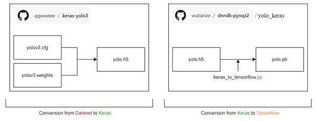
‐ แปลงจาก Darknet เป็น Keras
https://pjreddie.com/darknet/yolo/にアクセスして、yolov3.weightsをダウンロードします。
copy to ~/Desktop/YOLO-on-PYNQ-Z2/DNNDK/model_conversion
$ cd ~/Desktop/YOLO-on-PYNQ-Z2/DNNDK/model_conversion
$ python convert.py yolov3.cfg yolov3.weights ~/Desktop/YOLO-on-PYNQ-Z2/DNNDK/model_conversion/model_data/yolo.h5
‐ แปลงจาก Keras เป็น Tensorflow
$ python keras_to_tensorflow.py --input_model=/home/hong/Desktop/YOLO-on-PYNQ-Z2/DNNDK/model_conversion/model_data/yolo.h5 --output_model=/home/hong/Desktop/YOLO-on-PYNQ-Z2/DNNDK/model_conversion/model_data/yolo.pb
‐ ทำ Quantization
$ cp ./model_data/yolo.pb /home/hong/Desktop/YOLO-on-PYNQ-Z2/DNNDK/quantization
# check the input and output names on this network
$ cd /home/hong/Desktop/YOLO-on-PYNQ-Z2/DNNDK/model_conversion
$ decent_q inspect --input_frozen_graph=model_data/yolo.pb
จดบันทึกเนื้อหาต่อไปนี้ (จะใช้ในภายหลัง)
Found 1 possible inputs: (name=input_1, type=float(1), shape=[?,?,?,3])
Found 3 possible outputs: (name=conv2d_59/BiasAdd, op=BiasAdd) (name=conv2d_67/BiasAdd, op=BiasAdd) (name=conv2d_75/BiasAdd, op=BiasAdd)
‐ เตรียม COCO dataset
ดาวน์โหลด COCO dataset จากเว็บไซต์ต่อไปนี้
http://images.cocodataset.org/zips/train2017.zip
http://images.cocodataset.org/annotations/annotations_trainval2017.zip
สร้างไดเรกทอรีต่อไปนี้ และแตกไฟล์ COCO dataset ที่ดาวน์โหลดมา
$ mkdir /home/hong/Desktop/YOLO-on-PYNQ-Z2/DNNDK/quantization/yolo_dataset
จากนั้น เปลี่ยนชื่อโฟลเดอร์ดังนี้
train2017 -> images
annotations_trainval2017 -> labels
‐ แก้ไขสคริปต์การแปลง
$ gedit /home/hong/Desktop/YOLO-on-PYNQ-Z2/DNNDK/quantization/graph_input_fn.py
แก้ไข path
path = "/home/hong/Desktop/YOLO-on-PYNQ-Z2/DNNDK/quantization/yolo_dataset/images/"
‐ ทำ Quantization
$ cd /home/hong/Desktop/YOLO-on-PYNQ-Z2/DNNDK/quantization
$ gedit quant.sh
ในส่วนของ --output_nodes ให้ระบุเนื้อหาที่ได้จากการตรวจสอบด้วย "decent_q inspect"
echo "#####################################"
echo "QUANTIZE"
echo "#####################################"
decent_q quantize \
--input_frozen_graph ./yolo.pb \
--input_nodes input_1 \
--input_shapes ?,416,416,3 \
--output_nodes "conv2d_59/BiasAdd,conv2d_67/BiasAdd,conv2d_75/BiasAdd" \
--method 1 \
--input_fn graph_input_fn.calib_input \
--gpu 0 \
--calib_iter 100
$ chmod +x quant.sh
$ ./quant.sh
ไฟล์ที่ผ่านการทำ Quantization แล้วจะถูกสร้างไว้ที่
~/Desktop/YOLO-on-PYNQ-Z2/DNNDK/quantization/quantize_results/quantize_eval_model.pb
‐ คอมไพล์สำหรับ DPU
$ cd ~/Desktop/YOLO-on-PYNQ-Z2/DNNDK/quantization
$ cp ./quantize_results/deploy_model.pb /home/hong/Desktop/YOLO-on-PYNQ-Z2/DNNDK/compilation
$ cd /home/hong/Desktop/YOLO-on-PYNQ-Z2/DNNDK/compilation
$ dlet -f ~/Desktop/Pynq-Z2_2020_1/pynqz2_dpu.srcs/sources_1/bd/base/hw_handoff/base.hwh
$ dlet -f ~/Desktop/Pynq-Z2_2020_1/pynqz2_dpu.srcs/sources_1/bd/base/hw_handoff/base.hwh /home/hong/Desktop/YOLO-on-PYNQ-Z2/DNNDK/compilation/pynq-z2.dcf -o
$ mv dpu-12181630-181630-202412181630-1630-30.dcf pynqz2_dpu.dcf
$ chmod 777 ~/Desktop/YOLO-on-PYNQ-Z2/DNNDK/compilation/pynqz2_dpu.dcf
$ sh compile.sh
ไฟล์ที่คอมไพล์แล้วจะถูกสร้างไว้ที่นี่ (การคอมไพล์ใช้เวลานาน จากการทดลองบน PC Core i5-13500 ใช้เวลาประมาณ 12 ชั่วโมง)
(decent) hong@ubuntu:~/Desktop/YOLO-on-PYNQ-Z2/DNNDK/compilation/compile$ ls
dpu_yolo.elf yolo_kernel_graph.jpg yolo_kernel.info
1.2.4. ทดสอบบนอุปกรณ์จริง
การทดสอบบนอุปกรณ์จริงจำเป็นต้องสร้างโปรแกรม แต่ครั้งนี้จะใช้โปรแกรมที่เตรียมไว้ในเอกสารอ้างอิง
‐ การสร้าง SD Card
สร้างพาร์ติชันต่อไปนี้ด้วย gparted
Partition1：fat32ファイルフォーマット
Partition2：ext4ファイルフォーマット
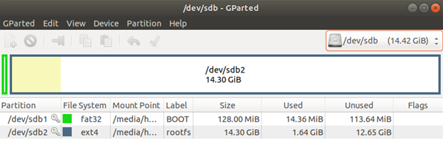
คัดลอก Uboot, linux และอื่นๆ ไปยัง SD Card
$ sudo mkdir /mnt/sdb1
$ sudo mkdir /mnt/sdb2
$ sudo mount /dev/sdb1 /mnt/sdb1
$ cd ~/pynqz2_dpu/images/linux/
$ sudo cp BOOT.BIN image.ub /mnt/sdb1/.
$ sudo umount /mnt/sdb1
$ sudo mount /dev/sdb2 /mnt/sdb2
$ sudo tar xzf rootfs.tar.gz -C /mnt/sdb2/
$ sync
$ cd ~/Desktop/YOLO-on-PYNQ-Z2/DPU\ implementation/Petalinux/
$ sudo cp -vr ./zynq7020_dnndk_v3.1/* /mnt/sdb2/home/root/
$ sudo cp -vr ./zynq7020_dnndk_v3.1 /mnt/sdb2/home/root/
$ sync
$ sudo umount /mnt/sdb2
‐ สิ่งที่เตรียมไว้ในเอกสารอ้างอิงมีไฟล์ .cpp, makefile และอื่นๆ เราจะใช้ไฟล์เหล่านั้นตามเดิม แต่จะแทนที่เฉพาะไฟล์ YOLO ที่คอมไพล์แล้ว
$ cd ~/Desktop/YOLO-on-PYNQ-Z2/DNNDK/compilation/compile
$ cp dpu_yolo.elf ~/Desktop/YOLO-on-PYNQ-Z2/Deployment/yolo_pynqz2/model/.
$ cp yolo_kernel_graph.jpg ~/Desktop/YOLO-on-PYNQ-Z2/Deployment/yolo_pynqz2/info/.
$ cp yolo_kernel.info ~/Desktop/YOLO-on-PYNQ-Z2/Deployment/yolo_pynqz2/info/.
‐ เสียบ SD Card เข้าไปใน Pynq-Z2 แล้วเปิดเครื่อง รอจนกว่า Linux จะบูตเสร็จ ตรวจสอบให้แน่ใจว่า DPU ถูกรวมเข้าไปอย่างถูกต้อง โดยใช้คำสั่ง devmem เพื่ออ่านค่าบางอย่าง (รันบนบอร์ด Pynq-Z2)
‐ ล็อกอินด้วย MobaXterm โดย user คือ "root" และ pass คือ "root"
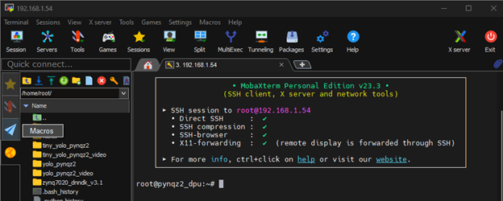
‐ ติดตั้ง DNNDK (รันบนบอร์ด Pynq-Z2)
root@pynqz2_dpu:~# cd zynq7020_dnndk_v3.1/
root@pynqz2_dpu:~/zynq7020_dnndk_v3.1# sh install.sh
‐ คัดลอกไฟล์ cpp, makefile และอื่นๆ (ทั้งโฟลเดอร์ yolo_pynqz2) ไปยังบอร์ด Pynq-Z2 (สามารถลากและวางใน MobaXterm ได้)
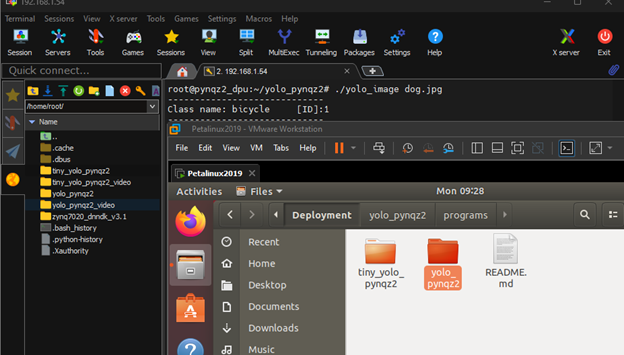
‐ บิวด์และรันแอปพลิเคชัน (รันบนบอร์ด Pynq-Z2)
root@pynqz2_dpu:~/yolo_pynqz2# make
root@pynqz2_dpu:~/yolo_pynqz2# ./yolo_image dog.jpg
เมื่อรันสำเร็จ จะแสดงวัตถุที่ตรวจจับได้ดังภาพด้านล่าง
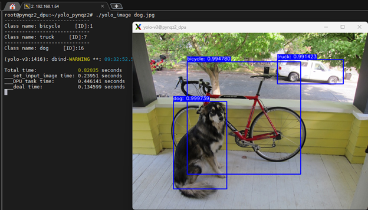
1.3. อ้างอิง
เอกสารอ้างอิง:
https://andre-araujo.gitbook.io/yolo-on-pynq-z2/deployment-on-pynq-z2/execute-yolov3
เนื่องจาก DPU IP เวอร์ชันล่าสุดไม่รองรับ Zynq-7000 แล้ว จึงไม่สามารถดาวน์โหลดจากเว็บไซต์ของ Xilinx ได้ แต่สามารถดาวน์โหลดได้จากลิงก์ด้านล่าง
https://drive.google.com/file/d/1-Ajpk6HIDHIkwDHdUJaB92HN5g_S0Bam/view